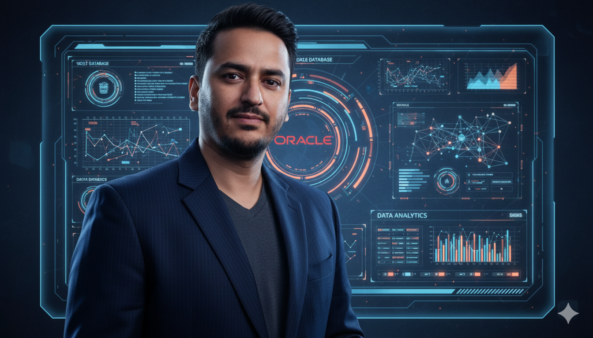

Turning complex data chaos into actionable intelligence. Specialist in designing zero-touch ETL pipelines, scalable data warehouses, and interactive Power BI architectures.
Core competence: Architecting automated systems that ingest raw data (Oracle, MSSQL, PostgreSQL), execute complex transformations nightly, and deliver refreshed business dashboards by 5:30 AM without manual intervention.
Designing immersive analytical experiences.
Building robust pipelines and warehouses.
Scripting efficiency into existence.
Operationalizing tech in real-world scenarios.
Eliminated manual Excel consolidation by building a centralized SQL Server data warehouse with automated nightly data ingestion, and developed 10+ Power BI dashboards for key KPIs such as Daily Sales, Menu Mix, and Wastage. Automated executive reporting to deliver scheduled business insights before business hours, enabling faster and data-driven decision-making.
# ETL Config Extract { "source_db": "Oracle_MICROS_3700", "target_dw": "MSSQL_Warehouse", "locations_count": "15", "schedule": "02:00_AM_Daily", "transformations": [ "dim_menu_mapping.py", "fact_sales_consolidation.sql" ], "outputs": [ "PBI_Service_Refresh", "CEO_PDF_Email" ] }
Faced with a restricted cloud DB vendor denying direct access, identified alternative data path via on-premise CAPS server. Analyzed and decoded proprietary raw POS transaction data structure, mapping records against master config to build custom SQL reporting logic.
/* SQL Transformation Snippet */ WITH RawData AS ( SELECT TransactionID, /* Decoding raw binary string */ CAST(SUBSTRING(RawBlob, 24, 8) AS DECIMAL(10,2)) AS NetSales FROM dbo.CAPS_Transactions ) SELECT TransactionID, NetSales INTO dbo.Decoded_Sales FROM RawData;